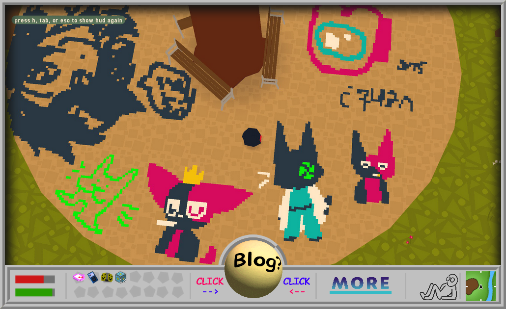

I made the first version of my site in late 2023 (checking through the GitHub, the first commit to it was on Aug 28, 2023). It started as (and continued to be) a fun little hoby / side activiy, and a place to kind of host myself on the internet, since my social media presence at the time was extremely scarce, and only shrunk from there.
It's clear that this site was mostly made with half remembered knowledge from high school and university courses. It's very old web in a way I quite like. I hadn't yet decided to completely break web development standards, so I had a persistent Nav, Header, and footer throughout the site. Still especially fond of the 'vibe' here. It's very playful and fun. What I imagine neocities sites look like (I haven't seen any.)
This one also included a small music player that I never re-introdced (yet). It wasn't made by me, as something like that was (and still is) far beyond my skill level.
You can browse this version of the site here.
It looks like this second version of the website (nicnamed 'crazuspace') was published on Dec 26, 2024. (these are all feeling closer together than I'd imagined in my brain...).
So, the second version! You can really tell that the last website was more of a 'shake the rust off' kind of thing, and this one is where I start to drop conventional web design.
Interestingly, the original concept for this site was a lot more inspired by the classic space jam website, with a ring of links around the center (clearly that'd never work). Each one was going to be a piece of original art, and I made some of them, along with a concept sketch of how it would look:
Still really like those (expecially the IPod one with the cord wrapped around it). I ended up ditching this idea this idea because I didn't feel like I could do the art justice (how the hell do you draw the inside of a lava lamp?). In the end I went to something more simple. Making these newer pixel icons was still fun (more like a design challange now since I had limited pixels to work with).
Aside from the homepage, the other parts of the website weren't too dissimilar to it's predecessor, the blog especially.
At some point, I decided to spice up the nav page a little (by throwing it into a dump), which ended up being this site's sort-of '2.0'. A fun web degn learning experience for me, this is where I learned about absolute positioning, z indexing and non-interactable elements.
You can visit this version of the site here.
A sort of evolution of the last one, we have what I've nicknamed the 'crazuhud' version of the site. So named because I wanted to try and emaulate a heads up display. This index page is perhaps my favorite part of this whole website. It gets back to that cozily cluttered, almost toylike feel that there was some of in the original site. Having a large, central "image of the day" was also an somehting I really liked playing with. (my favorite emelemt of the whole site is the little sitting thing in the bottom right next to the map. I want to find a way to carry them over into this stite.)

Perhaps the greatest effort of this site was put into this, a complete visual recreation of an IPod touch 4 homescreen in (mostly) html and css. While I am proud of it, I kind of grew to dislike it's presence over time, since it leaves an apple-y taste on the rest of the website. Had fun making the app icons though.
You can visit this version of the website here.